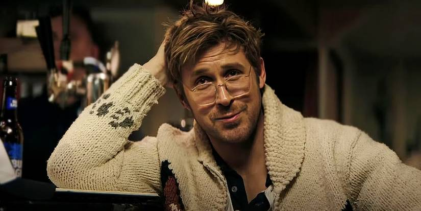

He is,,
Ryland Grace is my favorite Ryan Gosling character. As the main character of the movie, he has so much heart and charm that you can easily find yourself endeared to him. Ryland is the hero of the movie, and shows charm to every person and thing he meets. Project Hail Mary is a softer, more emotional film, which explores humanity and its relationship to space.

I love Ryland because of how much acting skill and charm that was placed into him. He’s so sweet the whole movie, and constantly has an aura around him that makes you think “he’d be a nice person to be friends with.” The movie is an emotional joyride that I’d recommend you to watch as a starting film and just in general.